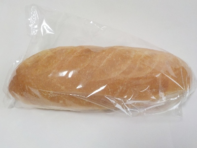
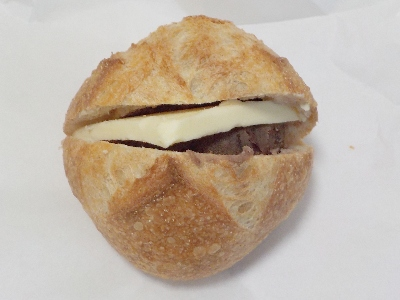
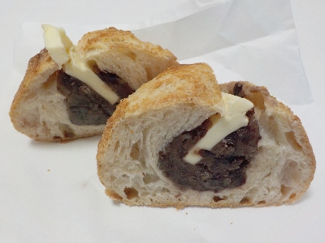

BOCのヴィエノワナチュール。
2025/04/19

外はコンガリで中はふんわり柔らかなパンです。税込み216円です。
コンガリとしたいい風味と、甘みのあるパン味が楽しめました。
今日は朝買いに行ったら、茶色くて照りてりして光ったパンが多くありました。近頃っぽい高級感のあるパンが多いなーと思いました。
島根県出雲市姫原町3-5-7
2025/04/19

外はコンガリで中はふんわり柔らかなパンです。税込み216円です。
コンガリとしたいい風味と、甘みのあるパン味が楽しめました。
今日は朝買いに行ったら、茶色くて照りてりして光ったパンが多くありました。近頃っぽい高級感のあるパンが多いなーと思いました。
2024/12/14

新しくパン屋さんが出来たのは知っていましたが、名前がアルファベットのBOCでなんだか意味が分からないので近寄らないでいました。
今日は別のパン屋さんに行ったら駐車場が空いていなかったので、どこに行こうか？って考えてここに行くことにしました。
あんバター1個で356円です。
高いですね。でも今時こんなものかな？アンパンが食べたかったので買っちゃいました。

半分こして食べようと思ったので切りました。見た目がカッコいい。なんか洋菓子みたいです。
パンの中にはあんことバターがしっかり入ってました。
あんこも美味しかったですが、パン自体がとっても美味しかったです。パリパリの表面とか小麦感があって味わい深いパンの味が楽しめました。
値段分の価値は十分あると思いました。次はバゲットを買いに行こうと思っています。